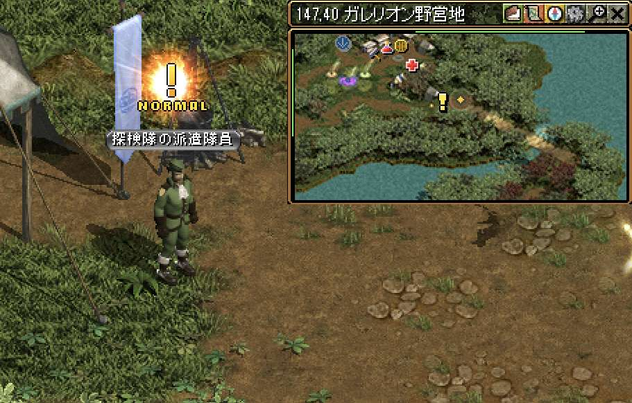
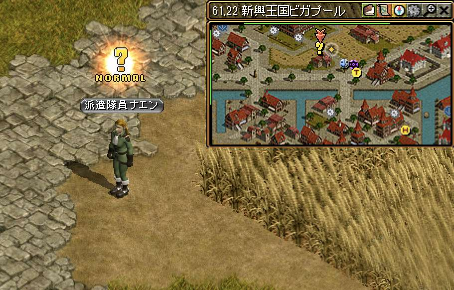
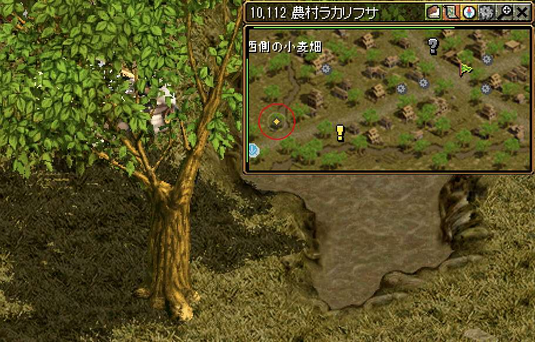
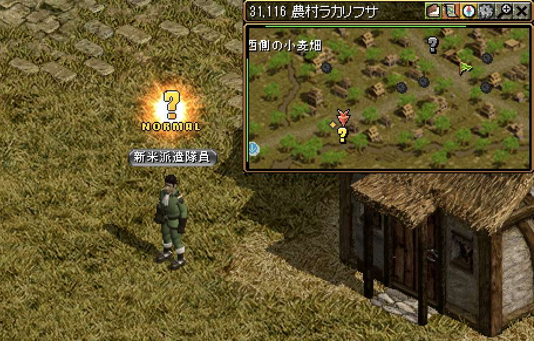
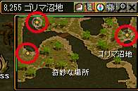
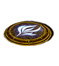
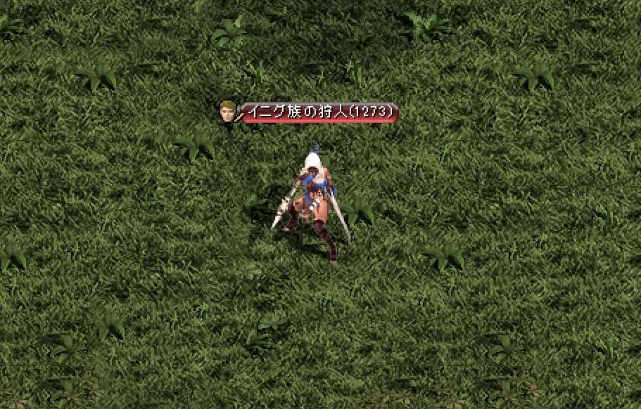
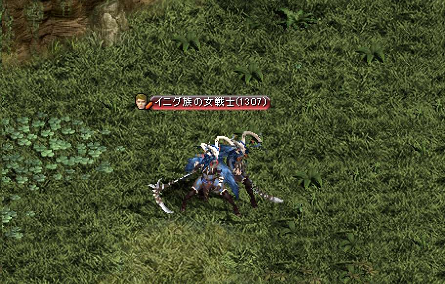
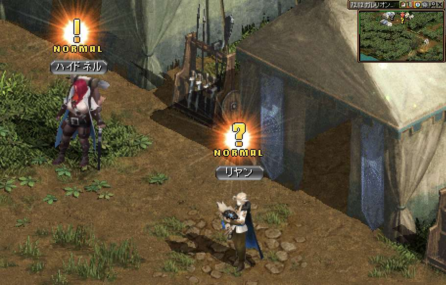
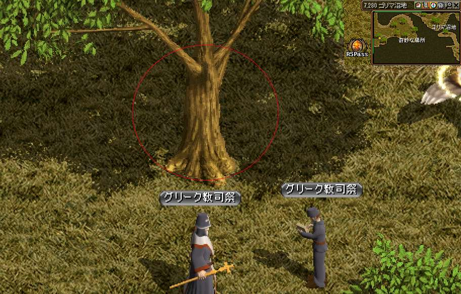

◾️受諾条件:Lv1350~
◾️ヤティカヌ連作クエストの「その茎を切れ」を完了することで受諾可能
◾️経験値約2510億
◾️目安60分~
目次
1.派遣のお知らせ ＜ 2.頑強な妨害 ＜ 3.密かに調査するために ＜ 4.追い迫る影 ＜ 5.二つ目の旅路
1. 派遣のお知らせ
|  |
・ガイド ・1201～ ・クエスト ・負傷者のための薬草  探検隊の派遣議員と話してクエストスタート 探検隊の派遣議員と話してクエストスタート |
|---|---|
|  |
 スフィアの街移動【ピガプール】へ 派遣隊員ナエンと話してクエストスタート スフィアの街移動【ピガプール】へ 派遣隊員ナエンと話してクエストスタート 会話後【ラカリフサ】フィールドに飛ばされる 会話後【ラカリフサ】フィールドに飛ばされる
|
|  |
 【10.112】の木を触ってＵＰ。 【10.112】の木を触ってＵＰ。経験値が貰えるのでパワキを準備しよう！ |
2. 頑強な妨害
|  |
新米派遣隊員と話してＵＰ。 |
|---|---|
|  |
 そのまま左のポータルから【ゴリマ沼地】フィールドへ 沼地の調査1【12.206】 沼地の調査2【85.218】 沼地の調査3【8.255】 |
|
スフィアの街移動【農村ラカリフサ】へ 新米派遣隊員と２回はなしてＵＰ 経験値が貰える！ |
3. 密かに調査するために
 |
・ガイド ・1251以降～ ・クエスト ・胎動→野営地移動 派遣の件ですで、リヤンと話して話してＵＰ。経験値が貰える！ |
|---|---|
|  |
野営地の移動ポータルから【月の出】フィールドへ 【イニグ族の狩人】幻影の草20個集める |
 |
・ガイド ・1251以降～ ・クエスト ・胎動→野営地移動 派遣の件ですで、リヤンと話して話してＵＰ。 |
|  |
野営地の移動ポータルから【日の出】フィールドへ 【イニグ族の女戦士】霧の実20個集める |
|  |
・ガイド ・1251以降～ ・クエスト ・胎動→野営地移動 派遣の件ですで、リヤンと話して話してＵＰ。経験値が貰える！ |
4. 追い迫る影
 風の羽【ゴリマ沼地】 【8.255】【85.21】【12.206】 風の羽【ゴリマ沼地】 【8.255】【85.21】【12.206】 |
|
|  |
3ヶ所触ったら木をクリックしてＵＰ。 もう１回クリックしＵＰ。 会話後【野営地】フィールドに飛ばされる
|
5. 二つ目の旅路
|
リヤンと話して話してＵＰ。 野営地の移動ポータルから【微風】フィールドへ 微風のMOBを200体狩る |
|
 |
・ガイド ・1251以降～ ・クエスト ・胎動→野営地移動 リヤンと話して話してＵＰ。 ハイネドルと話して話してＵＰ。経験値と妖精のかけらが貰える！ |